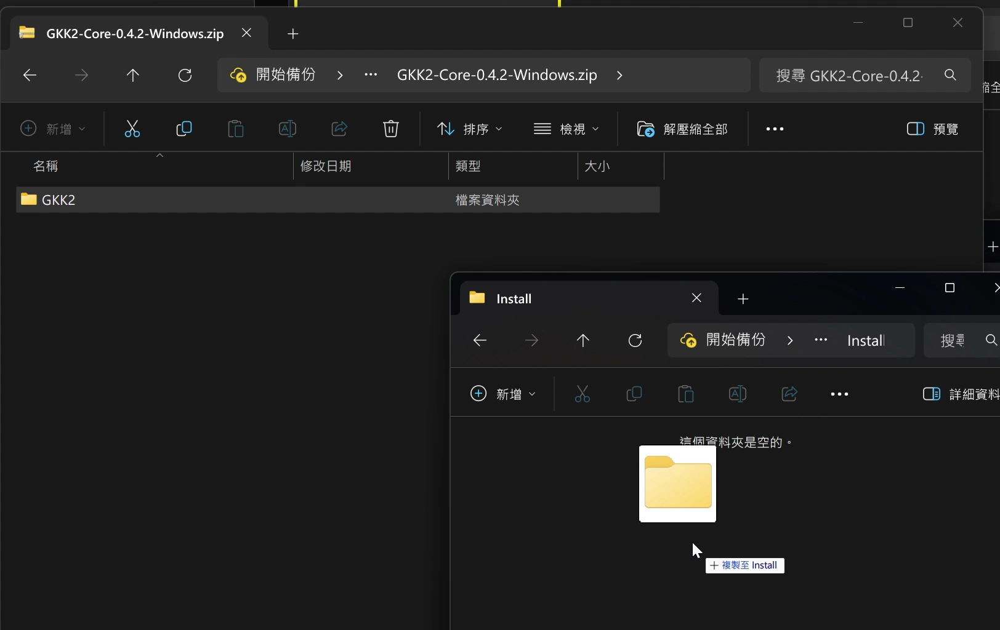
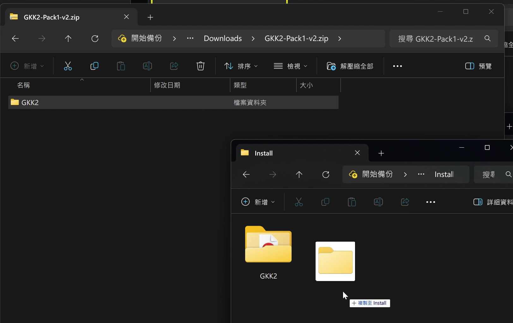
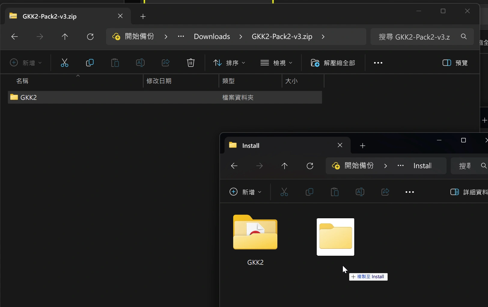
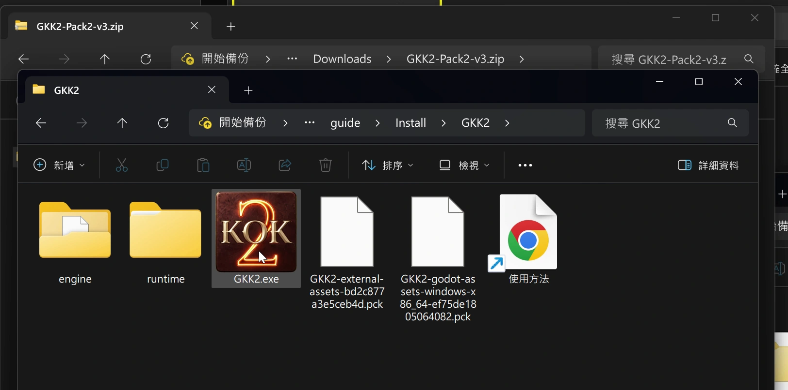
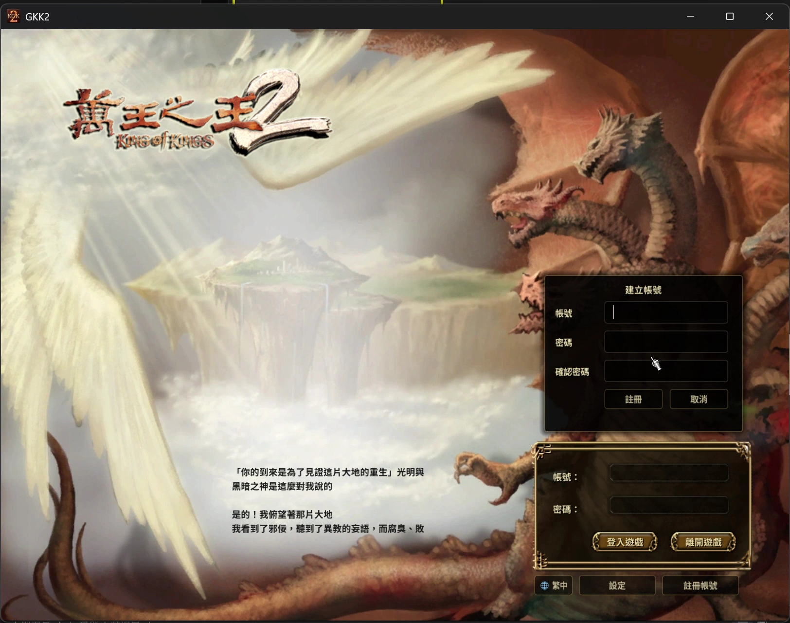

GKK2 重製測試
首次下載
- 解壓 ZIP 至安裝位置。
- 開啟解壓後的
GKK2資料夾，再開啟GKK2.exe。 - 點擊「自動下載並安裝」。完成後點擊「開始遊戲」。
從 0.4.2 更新 11 月 23 日版本
- 關閉遊戲及啟動器。
- 將 ZIP 內的
GKK2.exe解壓至原有的GKK2資料夾，取代同名檔案。 - 開啟新版啟動器，點擊「自動下載並安裝」。完成後點擊「開始遊戲」。
手動安裝圖解
手動安裝須下載 Game Core、 Pack1 - base.pck 及 Pack2 - res.pck。下圖中的檔名會隨版本而變更。
1. 解壓 Game Core
開啟 Game Core ZIP，將裡面的 GKK2 資料夾拖到安裝位置。圖中以 Install 資料夾為例。

2. 解壓 Pack1
開啟 Pack1 ZIP，將裡面的 GKK2 資料夾拖到相同的安裝位置。Windows 詢問時，確認合併資料夾。

3. 解壓 Pack2
開啟 Pack2 ZIP，將裡面的 GKK2 資料夾拖到相同的安裝位置，再次合併。

4. 檢查安裝結果
開啟合併後的 GKK2 資料夾，確認下列五項都在同一層。然後開啟 GKK2.exe。
engineruntimeGKK2.exeres.pckbase.pck

5. 註冊帳號
在登入畫面右下角點擊「註冊帳號」。填寫資料後，在視窗內點擊「註冊」。
